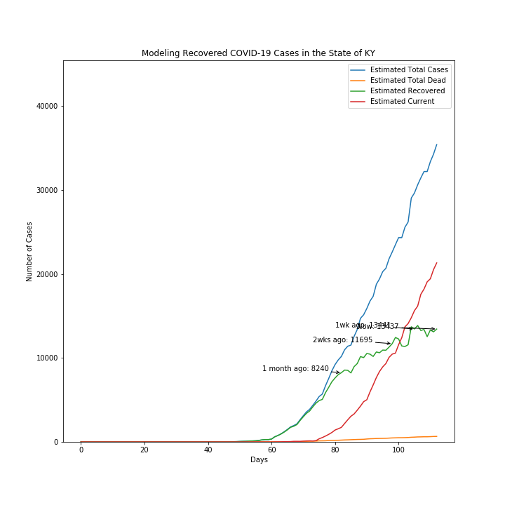
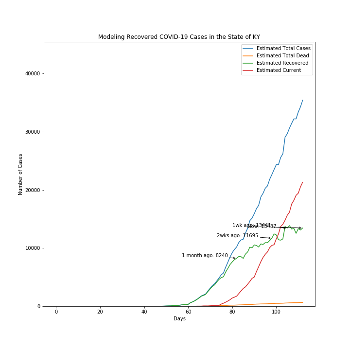

During the global spread of COVID-19, one of the most popular ways governments and public health organizations attempt to understand the virus is the creation of various models based on the data we have. These models vary in their predictions and understanding of the virus depending on the source of data, which varies country to country.
Partially as a way to further my own understanding and partially as a way to pass time, I attempted to scale some of these models to my own state of Kentucky. This has, to a degree, been a success, as I have a better understanding now of COVID-19's presence near me and have succeeded in passing some time in the creation of this project.
That said, this project comes with a few assumptions that may affect the conclusions drawn. I have tried to track all of them so that, if unjustified, they can be adjusted for a better model of the situation.
- 20% of cases are being counted. This is based on WHO estimates that 80% of cases are mild or asymptomatic, so they would not be counted by health departments.
- Assumed 50% of deaths have been counted. This is much more arbitrarily decided than above, but on the assumption that deaths in hospitals are counted, not deaths outside the hospital. However, mortality rates are low for asymptomatic and mild cases, so the data is assumed more accurate here than for infections.
- Recovered cases are the total infected minus the total infected cases two weeks ago minus the total infected cases today multiplied by the mortality rate.
- Mortality rate is used based on the deaths divided by total cases. When used in calculating other values, the most recent estimate is used, as most data is based on cumulative numbers.
To the right are visualizations I was able to come up as of April 28, 2020. They will be periodically updated as new data comes in.
Sources for data:
Infection & Death Counts
WHO
 
